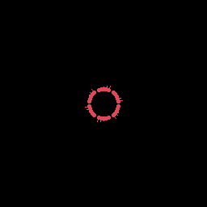

Meridian — the design language
Meridian is DreamLayer's HUD design system, built for a small additive
waveguide where every lit pixel costs battery and attention. Its one-line
thesis: the display is a place, not a stage. Two named passes implement
it: Lumen (motion and living light — docs/cinema_v2/lumen.md) and
Solid (the material richness of every settled frame —
docs/cinema_v2/solid.md). The device Lua under halo-lua/display/ is the
source of truth; host-python/src/dreamlayer/hud/ mirrors it constant for
constant, and a parity test bank asserts the two never drift.
The discipline
Meridian carries a kill-list: no zero-bit decoration. Spectacle must come from how information moves and glows, never from added theater. Standing rules, all enforced by tests or review:
- Text never moves, curves, or distorts.
- Nothing draws that does not carry information (idle constellations and Lissajous ornaments were killed by name).
- Temporal luma dithering is banned (at 20 fps it is a 10 Hz strobe); a strobe-guard test asserts no palette slot's luma reverses direction more than four times a second.
- Privacy is never ambient: privacy cards get no pane, enter with a slam, and freeze parallax.
Lumen — motion and living light
The Halo's one graphical superpower is a runtime-writable 16-slot palette with 1,024 luma tiers per slot. Lumen makes light itself the animation medium.
The engines
| Engine | Where | What it is |
|---|---|---|
| Springs | halo-lua/lib/easing.lua, presets in display/animations.lua |
Closed-form damped springs — pure functions of t, so every frame is deterministic and golden-testable. Two personalities: soft (zeta 0.85, omega 7.4 — text-adjacent, no visible overshoot) and snappy (zeta 0.63 — rings and dots, rebound capped at 8 percent and asserted in tests). Python twin: hud/motion_math.py. |
| Palette animator | display/palette_animator.lua |
Budgeted luma programs — wave, shimmer, flash, sweep, fade — over leased slots. At most 8 palette writes per tick; one-shots auto-stop and restore base. |
| Slot leases | display/palette.lua |
One live writer per slot, structurally. A lapsed program can never strand a slot off its base color. |
| Particles | display/particles.lua |
One pooled budget of 24, oldest-first eviction. Closed-form physics seeded by 1-D Perlin — same seed, same pixels. Honest 4bpp fades: dots shrink and streaks shorten; there is no alpha to cheat with. |
| Parallax | display/parallax.lua |
On-device IMU at 20 fps. Layers shift against head rate by depth class — LOCK 0 px (all text, verdicts, privacy), RIM +-1 px, RING +-2 px, AIR +-3 px — and spring home with a small inertial overshoot when the head stops. No sensor, reduced motion, or the veil: hard zero. |
Where the light lives
- Horizon aurora — a 12 s luma wave flows along the day-ring through three leased slots. Zero new geometry; idle only.
- Focus physics — anticipation pull-back, squash-stretch on the flight head, a 5-sample phosphor tail, a spring click on landing, one glint along the confidence arc, and a recede that files the card back into the day (160 to 200 ms).
- Card flairs — one optional
flairfield consumed at the enter-to-hold transition:burst(SavedMemory),chase(Loading),conduct(ObjectRecall). All card light programs share one id, so a crossfade can never leave two programs fighting over the same slots. - Hero moments — the promise shatter (transition only; replays never re-break), the 600 ms wake reveal, the dream door's starfield, and the privacy grip (parallax zeroed the frame the veil lands).
- Prism Lens — a kaleidoscope built from spring bloom-in, breathing rotation, two counter-rotating halo rings, and Perlin tip shimmer, inside v1's photosensitivity caps.

Budgets — asserted, not aspirational
test_draw_budget.py measures worst-case composited frames (idle aurora, the
ObjectRecall composite, testimony with shard spits, prism at maximum, and the
recede-under-condense crossfade): at most 420 draw calls per frame, at
most 8 palette writes per tick, at most 32 font switches per tick, particle
pool capped at 24, and zero new ambient BLE streams.
The reduce-motion contract
Total, and tested per card: under reduced motion nothing moves — settled frames at different times are pixel-identical; every palette program holds its still pose; particles do not spawn; parallax is zero; the wake reveal shows the whole day at once. And the Solid materials survive it: the reduce frame keeps at least 80 percent of the full frame's light, because panes, gradients, and blooms are static richness, not motion.
Solid — the material system
Lumen's quality was temporal; Solid makes the still frame worth a screenshot, inside the same budgets. Its three levers were all verified against the hardware adapter before design:
- Real font sizes.
frame.display.set_fontwas in the adapter all along, wired nowhere.typography.DEVICE_FONTis now the one hardware seam table — hero 22 px, xl 19, lg 17, md 13, sm 10 — with cached, pcall-latched switching: firmware withoutset_fontdegrades the entire system to single-size text by one boolean.fit_sizedrops long hero strings down the ladder instead of clipping the circular panel, and the glyph-advance table is pinned to the reference face within +-2 px by test. - Cheap translucency. Row-gap scanline fills: a radius-62 glass disc at a 3 px row gap costs 41 line calls. Per-pixel dithering for areas stays banned.
- Free static gradients. Strokes whose segment color walks a token ramp — identical call count to a plain stroke.
The materials API
display/materials.lua, twinned in hud/renderer.py:
| Function | Cost | Use |
|---|---|---|
glass_disc(cx, cy, r, color, gap) |
about 2r/gap lines | the card pane |
glass_capsule(x, y, w, h, color, gap) |
about h/gap lines | verdicts, live chain links |
grad_line / grad_arc / grad_bezier(..., ramp) |
same as plain | traces, separators, connectors |
bloom_ring(cx, cy, r, color) |
2 circles | halos on dots and rings |
Ramps: RAMP_MEMORY, RAMP_MEMORY_LIVE, RAMP_SUCCESS. Static ramps must
never contain a dynamic slot's base hex — otherwise the "static" geometry
would follow live slot luma — and an alias-guard test asserts no new color
equals any reserved dynamic base. Panes draw only in surface-luma colors
(this is an additive display: richer, not brighter), only at exit_t == 0,
and never under text; privacy-class cards get no pane at all.
Richness floors
"The screenshots don't look different" is a CI failure: regenerated goldens must exceed the pre-Solid lit-pixel baselines by at least 1.25x on the five recomposed heroes (focus hold, testimony, object recall, saved memory, person context).
The palette
Kept in lockstep between display/palette.lua and hud/themes.py:
| Token | Hex | Role |
|---|---|---|
background |
0x000000 |
the void |
surface |
0x0E1416 |
the glass pane luma |
text_primary |
0xECF0F1 |
ink |
text_secondary |
0xA8B8C0 |
supporting ink |
text_ghost |
0x58686F |
ghosts, hints (static twin 0x58686D) |
accent_memory |
0x2CC79A |
the brand teal (dim 0x1A7A60, static 0x2CC79B) |
accent_attention |
0xE06B52 |
attention (dim twin 0x7A3A2C) |
accent_success |
0x56D364 |
verified, kept (dim 0x2E7A3C) |
accent_error |
0xE05252 |
errors |
warning_amber |
0xFF6600 |
urgency (dim 0x8A3A00) |
privacy_danger / privacy_caution |
0xFF4444 / 0xFF8800 |
the veil family |
memory_trace |
0x00FFAA |
the living trace |
| confidence low / med / high | 0xFFAA00 / 0x00FFAA / 0xB8FFE9 |
ring hues |
Six dynamic palette slots are reserved by name (sky, energy, drift a/b, ghost_text, fx) and administered by the lease system; card light bands and the voice slot carry their own single-LSB-adjacent bases so firmware that matches static palette entries first can be tuned by one constant.
Motion constants at a glance
From display/animations.lua (mirrored in hud/motion_math.py; the parity
test covers the whole bank): enter 180 ms with 0/40/60/80 ms stagger by text
role, exit 120 ms; focus travel 140 ms + landing 100 ms, recede 200 ms; chime
220 ms, chord step 40 ms, rumble 100 ms, ripple 400 ms; aurora period 12 s;
testimony stage reveal 80 ms; burst 12 particles over 480 ms; wake reveal
600 ms; parallax return 260 ms.
The phone mirrors it
The phone app's design tokens (phone-app/src/ui/theme/) are the same
family — background black, surface #0E1416, accent #2FD4C4, one accent
per surface, an 8 pt grid, entrance motion and press-spring on everything —
plus a separate haloPalette used only by the HUD preview components as QA
truth. See The phone app.